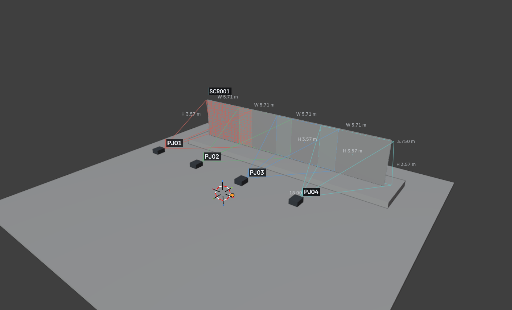
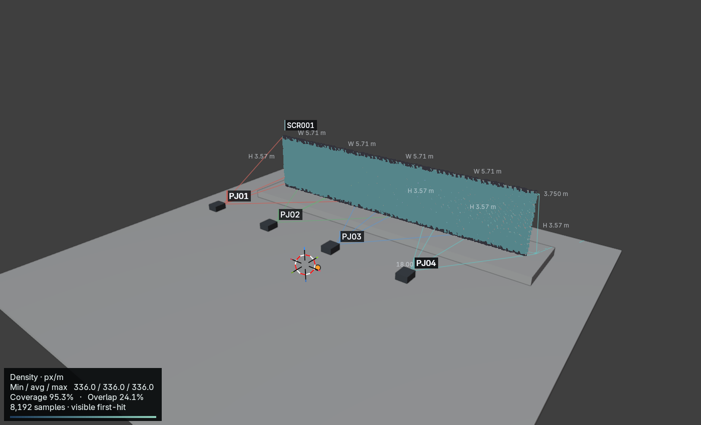
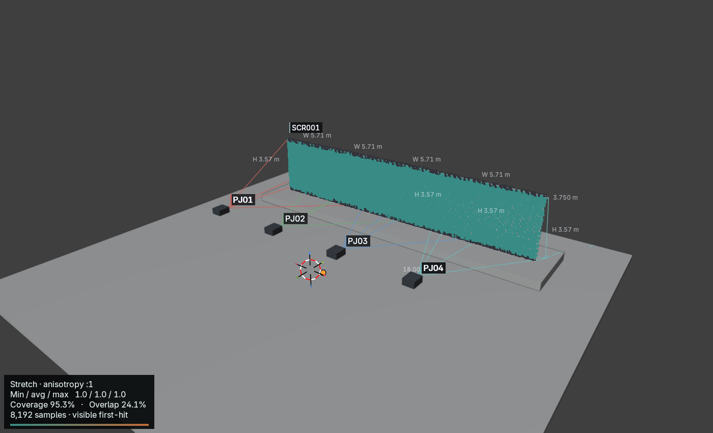

Development beta · 2026-10-24T02:28:22+00:00
Project Name: PATCH development fixture · Venue: Conference stage / four-projector panorama · Revision: Production validation beta · Author: Twisted Pixel



| ID | Raster | Ratio | Throw m | Image W × H m | px/m | mm/px | H / V shift % | Lumens | Lux | Notes |
|---|---|---|---|---|---|---|---|---|---|---|
| PJ01 | 1920 × 1200 | 1.40 | 8.00 | 5.71 × 3.57 | 336 | 2.98 | +0.0 / +0.0 | 9,400 | 461 | |
| PJ02 | 1920 × 1200 | 1.40 | 8.00 | 5.71 × 3.57 | 336 | 2.98 | +0.0 / +0.0 | 9,400 | 461 | |
| PJ03 | 1920 × 1200 | 1.40 | 8.00 | 5.71 × 3.57 | 336 | 2.98 | +0.0 / +0.0 | 9,400 | 461 | |
| PJ04 | 1920 × 1200 | 1.40 | 8.00 | 5.71 × 3.57 | 336 | 2.98 | +0.0 / +0.0 | 9,400 | 461 |
Shift uses full-image dimensions. Measurements and illuminance are nominal centre values.
| Group | Layout | Pair | Axis | Requested overlap | Actual overlap | Gap m |
|---|---|---|---|---|---|---|
| BG01 | HORIZONTAL | PJ01 / PJ02 | H | 509 px / 1.51 m | 509 px / 1.51 m | 0.00 |
| BG01 | HORIZONTAL | PJ02 / PJ03 | H | 509 px / 1.51 m | 509 px / 1.51 m | 0.00 |
| BG01 | HORIZONTAL | PJ03 / PJ04 | H | 509 px / 1.51 m | 509 px / 1.51 m | 0.00 |
Adjacent-pair overlap is measured on the group reference plane.
| ID | Width m | Height m | Aspect | Notes |
|---|---|---|---|---|
| SCR001 | 18.00 | 3.75 | 4.80 |
| Receiver | Samples | Area m² | Visible coverage | Overlap / surface | Min / avg / max px/m | Max anisotropy | Occluded samples |
|---|---|---|---|---|---|---|---|
| SCR001 · Screen | 8192 | 67.50 | 95.3% | 24.1% | 336 / 336 / 336 | 1.00:1 | 0.0% |
Density is conservative worst-direction density. Overlap is a percentage of total surface area.
Nominal projector measurements do not guarantee visible coverage. Surface analysis is sampled, two-sided opaque evaluated geometry; thin occluders and between-sample regions remain untested. Illuminance is nominal, not photometrically calibrated.
Structured source: beam-study.json. UUIDs identify records; labels are presentation only.